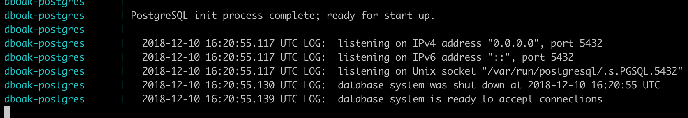
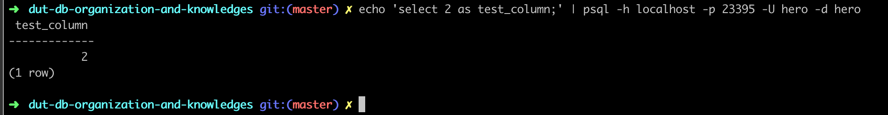
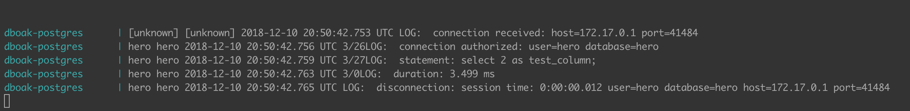
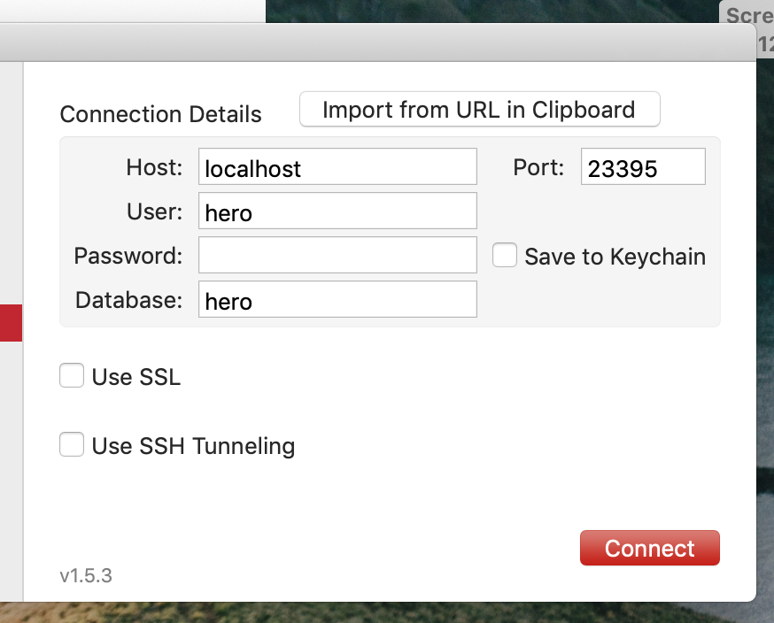
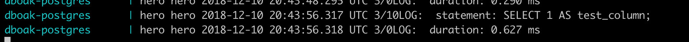
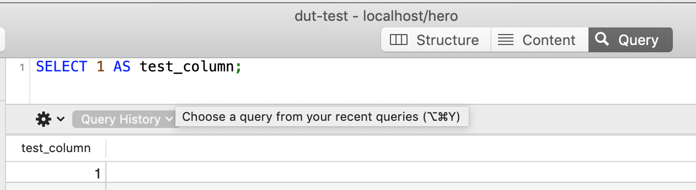
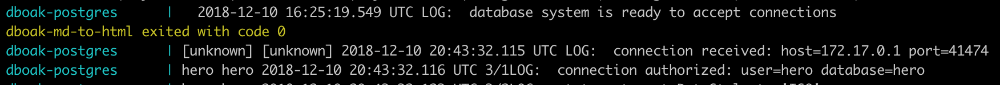

Онлайн версия доступна по ссылке
Существуют уже подготовленные образы БД postgres в репозитории образов Docker. Переходим по ссылке https://hub.docker.com/_/postgres/ и выбираем необходимую версию. Актуальная версия сейчас 11.
Добавляем в наш docker-compose.yml файл описание нового контейнера с БД.
dboak-postgres:
container_name: dboak-postgres
image: postgres:11
command: postgres -c config_file=/postgresql.conf
volumes:
- ./postgres/postgresql.conf:/postgresql.conf
- ./postgres/migration/:/docker-entrypoint-initdb.d
environment:
- POSTGRES_DB=hero
restart: always
network_mode: bridge
ports:
- '23395:5432'
logging:
options:
max-size: '50m'Описание параметров далее:
Файл конфигурации postgresql(./postgres/postgresql.conf) быз взят из официальной документации с исправлениями настроек: Отключена запись на диск данных, они будут находиться только в RAM памяти. Это сделано для ускорения работы БД во время разработки. После окончания разработки данные параметры можно вернуть в первоначальное состояние.
Файлы миграции находятся в папке ./postgres/migration/ Создадим один файл с первой миграцией и добавим в него содержимое
#!/bin/bash
set -e
psql -v ON_ERROR_STOP=1 --username "$POSTGRES_USER" <<-EOSQL
CREATE USER hero;
GRANT ALL PRIVILEGES ON DATABASE hero TO hero;
EOSQLЭта миграция создаст пользователя "hero" и даст ему проставит права доступа внутри БД
docker-compose up
Ждём пока скачается образ, запустится контейнер, выполнятся миграции.
dut-db-organization-and-knowledges git:(master) ✗ docker-compose up
Pulling auth-psql (postgres:11)...
11: Pulling from library/postgres
a5a6f2f73cd8: Pull complete
e50fbea8af5a: Pull complete
73b4855ad326: Pull complete
39616673f22b: Pull complete
94e1b79f69ee: Pull complete
c91e4af2ff8e: Pull complete
16ba314c612f: Pull complete
89011a174cee: Pull complete
d82b02de73e7: Pull complete
ef60eb07c042: Pull complete
225d0988f8bb: Pull complete
eebc8c1ff0d8: Pull complete
b11dada2e405: Pull complete
9723874e6b5f: Pull complete
Creating dboak-psql ... done
Attaching to dboak-psql
dboak-psql | The files belonging to this database system will be owned by user "postgres".
...Результат работы 
На скриншоте видно, что БД ожидает подключение.
Выполняем команду echo 'select 2 as test_column;' | psql -h localhost -p 23395 -U hero -d hero;
В результате SQL запрос select 2 as test_column; будет перенаправлен через stdin в программу psql, которая подключится с параметрами -h localhost -p 23395 -U hero -d hero к БД, выполнит запрос, завершится и вернет результат

Лог работы БД

Тоже самое но с использованием графической программы с пользовательским интерфейсом.
Окно настройки 
Лог подключения к БД 
Интерфейс для ввода и выполнения запросов 
Лог выполнения запроса в БД 